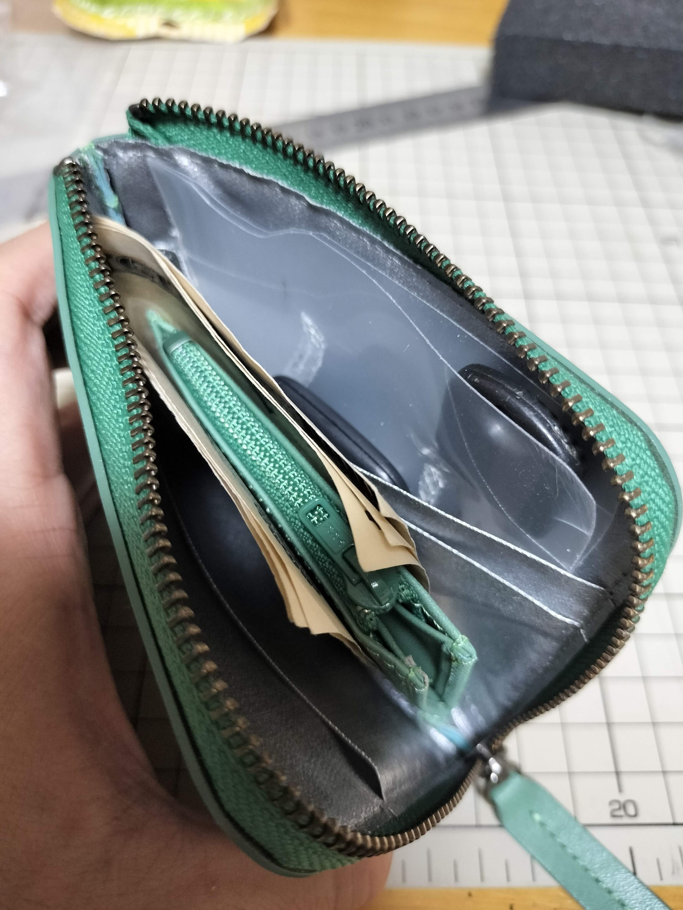
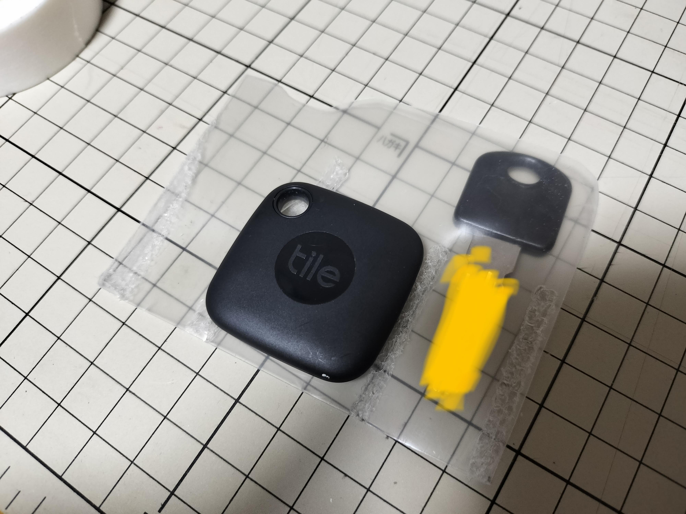
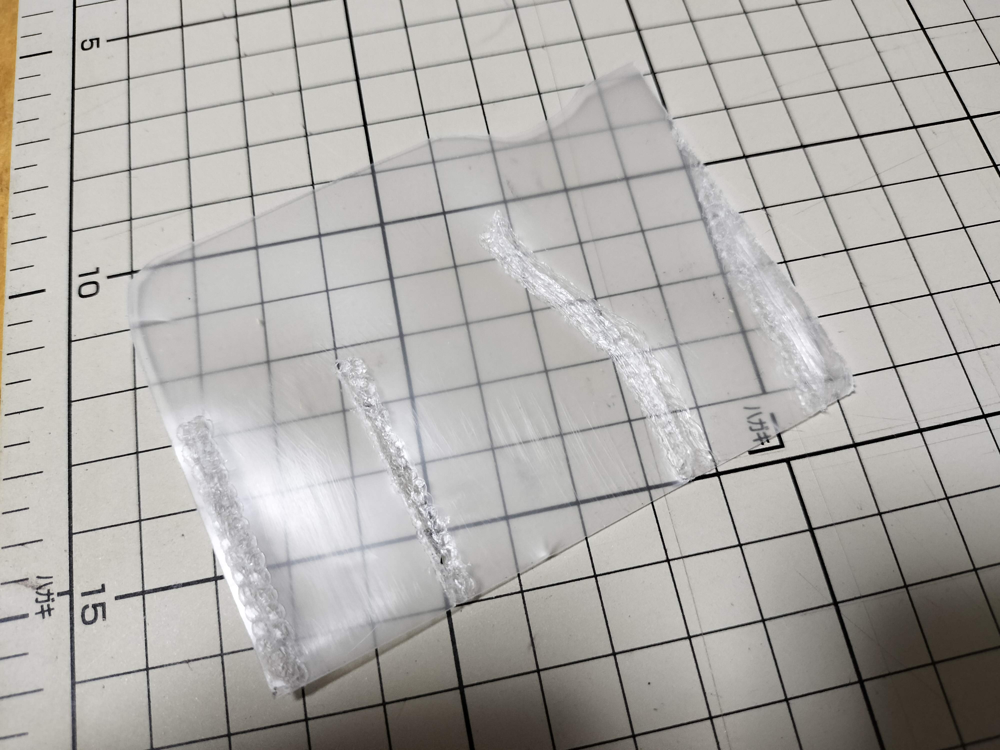

昨日の記事で紹介したhmnyのコンパクト財布に入るキーケースを作りました。クリアファイルを加工しているので薄くて軽くて丈夫です。逆さにして振っても鍵が落ちてこない絶妙なホールド力も実現。ハンドメイドなので、自分の鍵にサイズを合わせられるメリットが活きています。

自宅と自転車の鍵が入ります。間にはマスキングテープでスマートタグのTileを貼りつけています。これで最低限必要な鍵は財布と共に持ち歩けます。トラッキングも鍵と財布で分けずに一元化できます。

空の状態はこんな感じ。クリアファイルから必要なサイズを切り取って、鍵の形に合わせて溶着しています。クリアファイルはポリプロピレン製で230度～280度の温度で溶着できるとのことだったので、温度調整機能つきのはんだごてを270度に設定して使いました。こて先が広めな面状のものを使うと、もう少し仕上がりがよかったかもしれません。

ポイントは、溶着していないあそびを残しておくことで、これが鍵の入れやすさに繋がります。あと、財布本体を傷つけないように、角を丸くし、エッジや溶着部をやすりがけしています。
ビニールや革の既製品も見かけ、自分の財布に入れた時の使いやすさを求めたところ、自作を思いつきました。余りがちなクリアファイルを再利用できる上に、実用性もあって、気にいっています。
ENJOY!